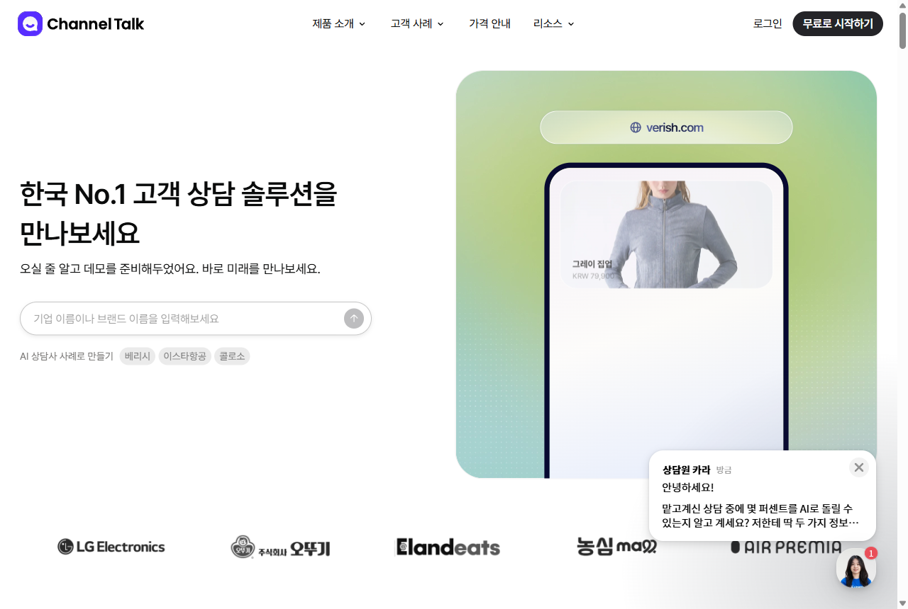
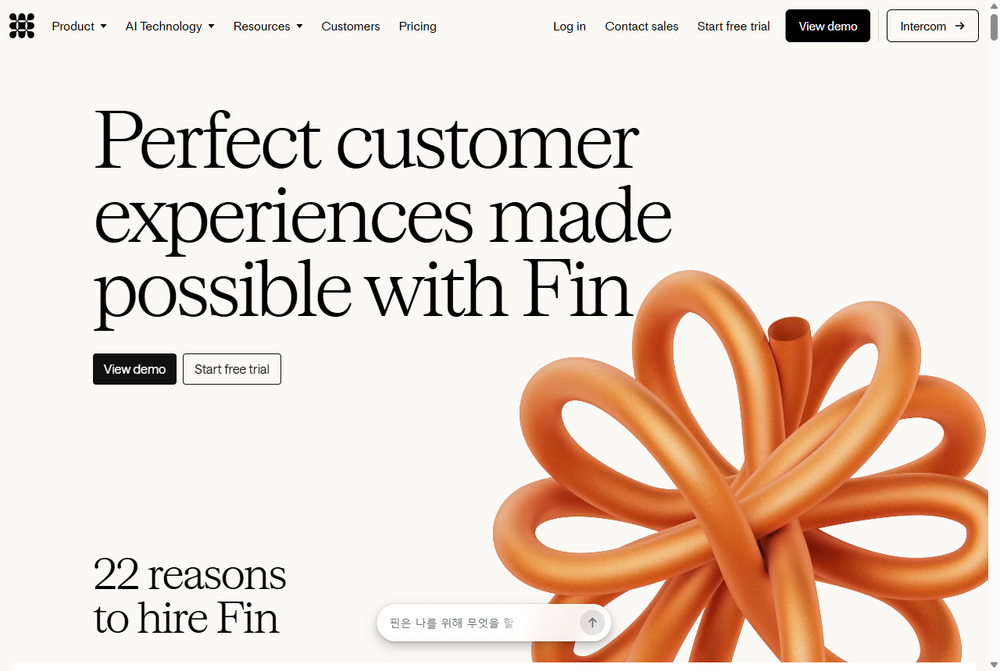
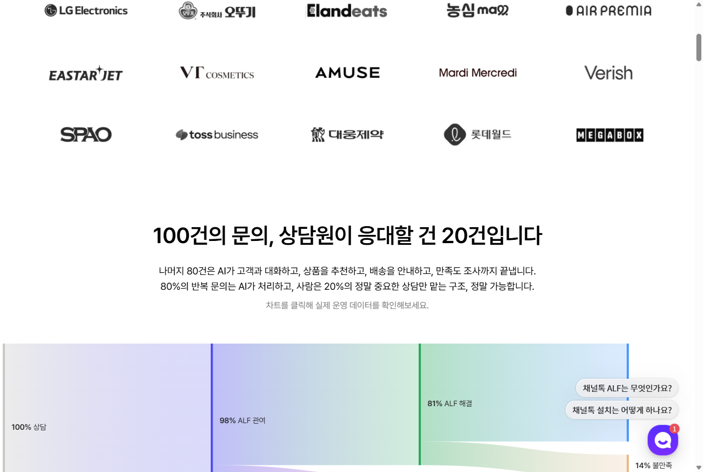

채널톡을 'CS 비용 절감 툴'이 아니라 — 사람 개입 없이 CX까지 키우는 제품으로. 그래서 어떻게 리드를 확보(획득)하고, 어떻게 유지(리텐션)할지까지 'how'로 제안합니다.
인터뷰·CS/세일즈 피드백·행동 데이터로 타깃·메시지 갱신
월·분기 리드 목표 분해·중단기 플랜으로 사수
Google·Meta·Naver·LinkedIn 전략·집행·최적화
GA4·Salesforce·Hex로 퍼널·기여도 체계 운영
IS/FS와 리드 퀄리티·핸드오프 캘리브레이션
리드는 '확보'에서 끝나지 않습니다. 확보한 리드가 남아야(리텐션·재계약) 비로소 그로스입니다 — 그래서 제품·메시지·온보딩을 함께 봅니다.

상품화(commoditize)되면 가격·성능은 '기본기'일 뿐 — 차별화가 없으면 큰 리드 확보가 막힙니다. (Bain/HBR)
B2B 충성도에서 가격은 9%(구매·도입 경험이 53%). "비싸서 해지"는 사실 '가치를 못 느껴서'입니다. (CEB)
지금은 결국 사람(CS팀)이 붙어 퍼널을 설계하고 데이터를 뜯어 답변을 만듭니다. AI가 좋아도 사람이 필수 → "리소스 줄였다"는 절반의 약속. 고객이 진짜 원하는 건 '사람 없이 CX가 좋아지고, 다음에 뭘 할지까지' 알려주는 것.
채널톡으로 CS(문의)는 처리했지만, CX(리뷰·재구매·경험)는 못 잡아 크리마리뷰·스냅리뷰 같은 CX 솔루션으로 옮겨갔습니다. CS에서 멈추면, 다음 가치를 주는 곳으로 떠납니다.
※ 지원자가 현장에서 관찰한 경험(공개 검증 자료 아님)

| 관점 | 타 CS 솔루션 | 진짜 필요한 것 |
|---|---|---|
| 판매 메시지 | "빨리 해결 / 비용 절감" | "사람 없이 CX가 좋아진다" |
| 맞춤 퍼널·답변 | 템플릿·룰 사람이 설계 | API 이해 기반 자동 맞춤 |
| 결과 그 다음 | 대시보드(숫자)에서 끝 | 넥스트 스텝(처방)까지 |
| 범위 | CS(응대)에서 멈춤 CX 공백 | CS → CX 개선 |
읽어낸 핵심 — 모두가 '얼마나 빨리·싸게 해결'로 싸웁니다. '사람 없이 맞춤 CX 퍼널·답변·처방'이라는 자리는 비어 있습니다.
상품·주문·정책을 API/연동으로 학습 → 그 비즈니스의 맥락을 안다
그 이해로 최적의 인입 감소·CX 퍼널을 자동 구성(사람 수작업↓)
비즈니스별 톤·정책 반영 → 사람 개입 최소로 종결
"무엇이"(대시보드)를 넘어 "다음에 뭘 해야"(처방)까지

| 채널 | 타깃 & 의도 | 핵심 메시지(전환) | 소재 / 콘텐츠 |
|---|---|---|---|
| Google 검색 | "CS 비용만 줄었나"·"인터콤 대안"·"CX 개선" | "문의만 쳐내는 AI는 많다. CX까지 키우는 AI는?" | 무료 CX 진단 + 사례 |
| Naver | 국내 이커머스·D2C 사장님 | "리뷰·재구매까지 — 사람 없이" | 업종별 CX 개선 사례 |
| Meta / IG | 이커머스 운영자(리타겟·룩어라이크) | 도입 후 인입↓ + 재구매·CSAT↑ Before/After | 고객 CX 성과 영상 |
| CX/CS 리더·mid-market·일본 | "해결률 말고 CX·NRR로 본다 + 넥스트 스텝" | 처방형 리더십 콘텐츠 |
왜 이렇게? — 가격·효율은 이미 '기본기'(Bain). 차별화는 상위 가치(사람 없이 CX·처방)에서 나오고, 그게 곧 큰 리드를 부르는 메시지입니다.
"당신 문의의 70%는 배송·반복 → 이렇게 줄이고, CX는 이렇게, 다음 스텝은 이것" — 첫 화면에서 '다른 CS와 다르다' 증명
진단대로 선제 알림·주문연동 즉시 셋업
CX 기회 큰(=ROI 큰) 고객을 SQL로 → IS/FS
채널→진단→체험→계약 기여도
핵심 — '진단 리포트' 자체가 채널톡의 USP(API 이해→맞춤 퍼널→처방)를 리드 단에서 체험시키는 WOW. 채널톡의 고객사례·채널콘·레시피를 증거로 재활용합니다.
매월 "인입 −X%·CX +Y, 다음엔 이걸 하세요"(CoS 자동 QBR) → 가치를 눈으로 증명
서비스에 깊이 박힐수록 이삼오구처럼 떠나기 어렵다 — 통합이 곧 해자
재구매·리뷰·CSAT 개선을 보여줘 "비용"이 아니라 "투자"로 인식시킨다
이탈을 5%만 줄여도 이익은 25~95% 늘고(Reichheld), 잘 남기는 SaaS는 NRR 120%+로 더 빨리 큽니다. '가격 이탈'은 가치 미증명 신호 — 매달 가치를 증명하면 막힙니다.
"다른 CS와 다르다"
WOW 진단
결과+넥스트스텝
가격 이탈 방어
지속 성장
| 구간 | 핵심 지표 |
|---|---|
| 확보 | 무료 CX 진단 수 · MQL→SQL 전환 · CPL |
| 활성·전환 | 14일 체험→유료 전환율 · 가치실현 시간(TTV) |
| 유지(★) | NRR(순매출유지율) · 재계약률 |
| 제품·CX | 인입률 · 재구매·CSAT(CX 성과) |
바로 NRR(순매출유지율)입니다. 신규 확보와 유지·확장(재계약·업셀)을 한 번에 보여주는, 그로스의 가장 정직한 지표입니다.
목표치는 내부 기준값 확인 후 확정 (가정치로 과장하지 않겠습니다).
| 공고가 원하는 것 | 제 포트폴리오 증거 |
|---|---|
| 페이드미디어 직접 운영(Google·Meta·Naver…) | 커머스에서 매체 직접 운영·ROAS/CAC 최적화, Web2App 브릿지로 전환의 '질' 개선 |
| 고객을 직접 만난 경험 | 채널톡 직접 사용 + 이삼오구 같은 'CS→CX 이탈'을 현장에서 관찰해 이 전략을 도출 |
| GA4·Amplitude·Hex + SQL | BigQuery로 실구매·CAC·재구매율 직접 산출, 라스트터치 한계 인지·코호트 리텐션 분석 |
| 데이터로 인과 검증 | 등급제·쿠폰 ROI를 인과까지 따져 재검증 — '가치 증명'을 숫자로 만드는 일을 해왔다 |
| AI 활용 / 가설-실험-학습 | AI로 분석·콘텐츠·전략 자산을 빠르게 만들고, 한 번에 하나씩 A/B로 검증 |
저는 '리소스 줄였다'가 아니라 '가치를 키웠다'를 숫자로 증명해 온 마케터입니다 — 채널톡의 확보와 리텐션, 둘 다에 바로 기여할 수 있습니다.
채널톡의 미션은 '고객의 지속가능한 성장'입니다. 'AI로 리소스 줄였다'에 멈추면 차별화도, 재계약도 없습니다. 채널톡은 이미 API·커머스·CoS라는 토대를 가졌고 — 저는 이걸 '사람 없이 CX를 키운다'는 메시지로 번역해 큰 리드를 확보하고, 매달 가치를 증명해 리텐션까지 만들겠습니다.
고객을 직접 써보고, 데이터로 가치를 증명하는 그로스 — 직접 증명하겠습니다. 감사합니다.